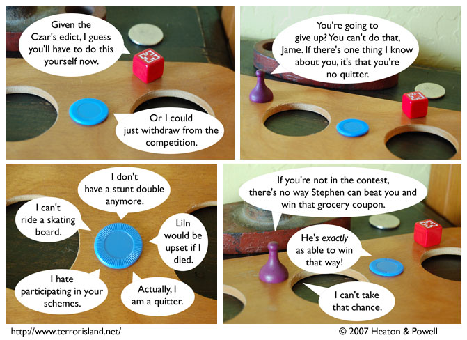

Strip #242
— Friday, December 28, 2007
Is Jame afraid of skating boards?
Notes, Thoughts, &c.
Ben’s Notes
Hey, I just came across an autobiographical webcomic written by a guy I went to high school with. It’s called Tip Me Over, Pour Me Out. Worth checking out even if you didn’t go to high school with him.
Lewis’s Notes
I know its only been one day since he’s been in the strip, but I miss Blueteen already. Let’s all take a moment to reflect on the wisdom of Blueteen’s leadership. And the fact that people keep ghosts as pets in the TIverse.